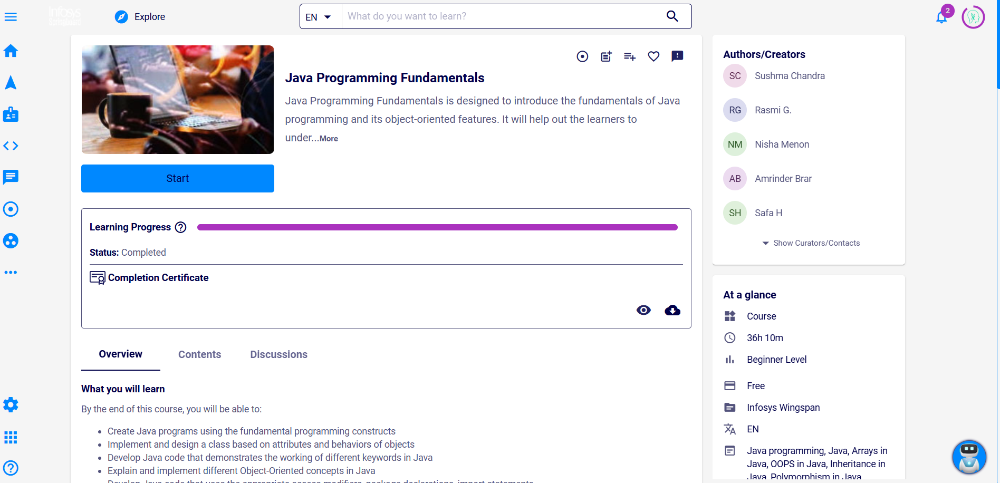
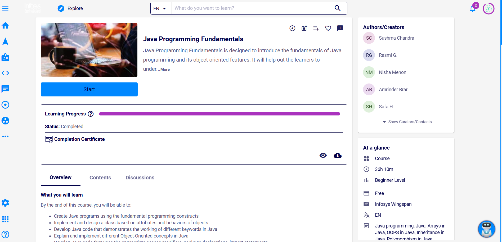

Who am I?
🚀 Hello Guys!I am Arokiya Nithish J, a passionate AI and Data Science student at Vel Tech University, with a strong foundation in Python, C, and Java. I specialize in AI development, machine learning, deep learning, and embedded systems, proudly maintaining a CGPA of 8.4%. I'm deeply passionate about AI Engineer, entrepreneurship and leadership, constantly driving innovation and bringing fresh ideas to solve real-world problems.
My academic journey is filled with hands-on projects in AI, data science, and IoT, coupled with active involvement in project management clubs, innovation leadership workshops, and technology communities. I further enhanced my technical capabilities through an intensive Python course and a valuable internship at the Center of Excellence in IoT at Vel Tech University, where I explored cutting-edge technologies.
I am a competitive coder, a research paper presenter, and currently working towards publishing innovation-driven research in reputed journals like IEEE Xplore. Beyond technical achievements, I am an AI content creator on YouTube, a motivational stage speaker, and a firm believer in continuous learning and knowledge sharingLet's connect and create impactful solutions together! 😊🎉🎈.
Download Resume


 
